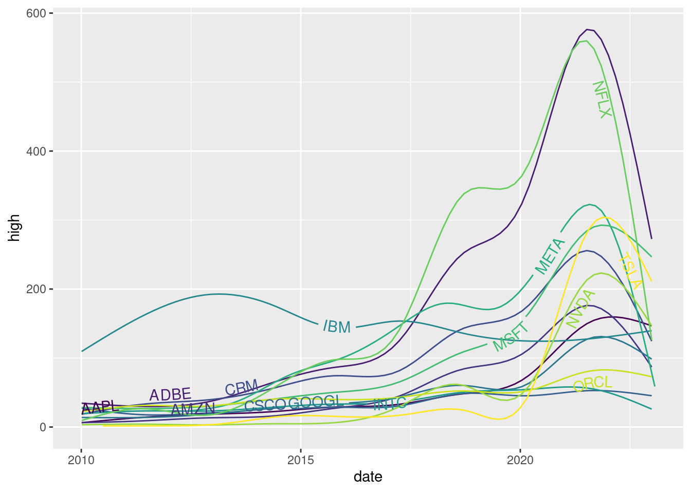
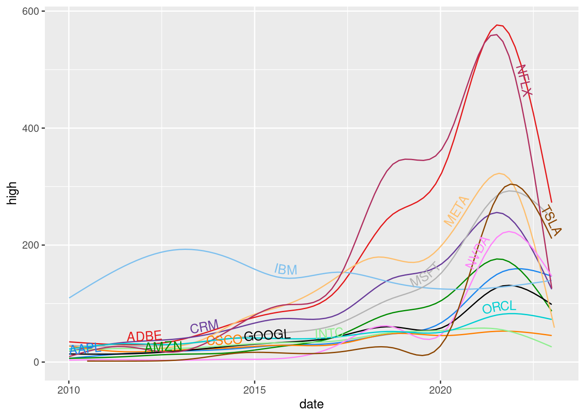
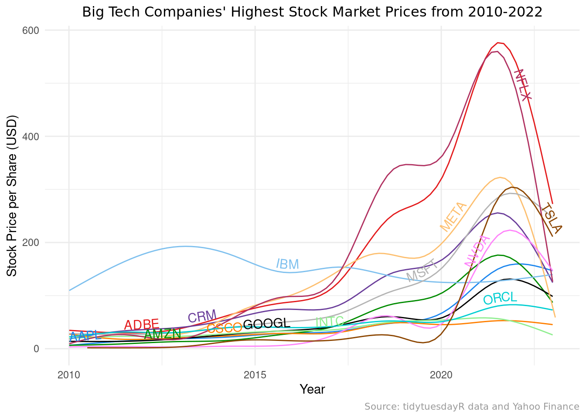

For this report, I will be using data sourced from tidytuesday (“https://www.kaggle.com/datasets/evangower/big-tech-stock-prices”) on the stock market prices for big tech companies. I would like to be able to visualize the data via a line graph displaying some aspect of stock market prices over time. I want this type of figure because it reminds me of the prevalent Google figures that pop up when you search the stock market prices.
The Data
First, I must read in the data in order to use it.
Rows: 45088 Columns: 8
── Column specification ────────────────────────────────────────────────────────
Delimiter: ","
chr (1): stock_symbol
dbl (6): open, high, low, close, adj_close, volume
date (1): date
ℹ Use `spec()` to retrieve the full column specification for this data.
ℹ Specify the column types or set `show_col_types = FALSE` to quiet this message.
Rows: 14 Columns: 2
── Column specification ────────────────────────────────────────────────────────
Delimiter: ","
chr (2): stock_symbol, company
ℹ Use `spec()` to retrieve the full column specification for this data.
ℹ Specify the column types or set `show_col_types = FALSE` to quiet this message.
The data table and the big tech companies that will be analyzed are shown below:
# A tibble: 14 × 2
stock_symbol company
<chr> <chr>
1 AAPL Apple Inc.
2 ADBE Adobe Inc.
3 AMZN Amazon.com, Inc.
4 CRM Salesforce, Inc.
5 CSCO Cisco Systems, Inc.
6 GOOGL Alphabet Inc.
7 IBM International Business Machines Corporation
8 INTC Intel Corporation
9 META Meta Platforms, Inc.
10 MSFT Microsoft Corporation
11 NFLX Netflix, Inc.
12 NVDA NVIDIA Corporation
13 ORCL Oracle Corporation
14 TSLA Tesla, Inc.
Refining the Data
A new objective
I want to examine the stock prices, for each of the 14 big tech companies in the data, over time. I will begin by selecting/ filtering the data. With the ample amount of data, I decided to focus on the highest price per day and summarize that data into the highest price over time, from 2010 to 2022, per stock company.
I decided that with the ample amount of data it was going to be a challenge to make it distinguishable with a color scale; this was not legible despite trying many different color scales.
`geom_smooth()` using method = 'gam' and formula = 'y ~ s(x, bs = "cs")'

Then I decided the colors could still be more distinguishable, so I did some searching and discovered I can create my own color scale. I utilized an established distinguishable color set available online from [https://stackoverflow.com/questions/9563711/r-color-palettes-for-many-data-classes] and narrowed it down to 14 colors. You can see this in the color wheel below:
`geom_smooth()` using method = 'gam' and formula = 'y ~ s(x, bs = "cs")'

Finally, I worked on the theming of the figure.
library(scales)
Attaching package: 'scales'
The following object is masked from 'package:purrr':
discard
The following object is masked from 'package:readr':
col_factor
stock_plot +labs(y="Stock Price per Share (USD)",x="Year",title ="Big Tech Companies' Highest Stock Market Prices from 2010-2022",caption ="Source: tidytuesdayR data and Yahoo Finance")+theme_minimal()+theme(plot.title =element_text(family="Lobster", size=12, color ="black", angle=0, vjust =1, hjust=0.5), plot.caption =element_text(family="Lobster", size=8, color ="grey60", angle=0, vjust =1, hjust=1) )
`geom_smooth()` using method = 'gam' and formula = 'y ~ s(x, bs = "cs")'

The Final Product
I was able to successfully make the plot I aimed for; mapping the highest stock market price from 2010 to 2022 for 14 different big tech companies. It was very challenging but I was able to utilize my knowledge form class as well as learn from forums and websites. The only way in which the plot fell short was in the visualization of the 2010-2015, as it is quite indistinguishable and methods to fix this comprised the visualization of the graph as a whole, but nonetheless here is the interesting final plot:
stock_plot +labs(y="Stock Price per Share (USD)",x="Year",title ="Big Tech Companies' Highest Stock Market Prices from 2010-2022",caption ="Source: tidytuesdayR data and Yahoo Finance")+theme_minimal()+theme(plot.title =element_text(family="Lobster", size=12, color ="black", angle=0, vjust =1, hjust=0.5), plot.caption =element_text(family="Lobster", size=8, color ="grey60", angle=0, vjust =1, hjust=1) )
`geom_smooth()` using method = 'gam' and formula = 'y ~ s(x, bs = "cs")'